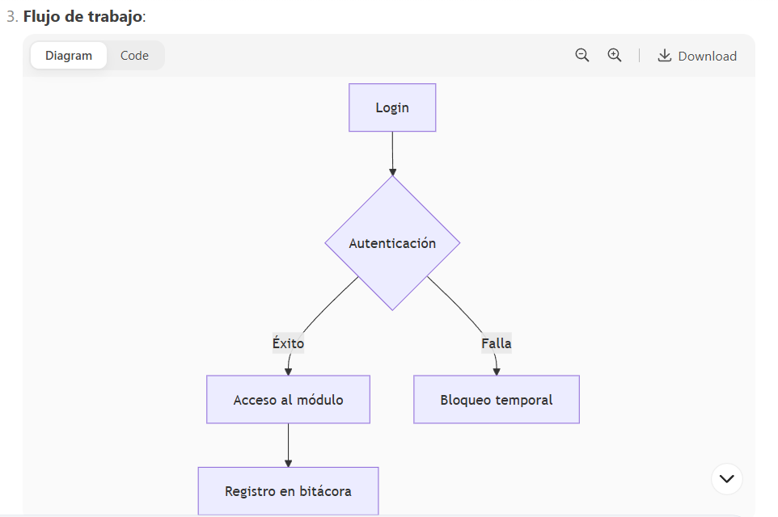

Definición de Roles y Perfiles y Módulos
🌟 Objetivo General
Desarrollar una plataforma nacional, moderna y escalable que concentre, administre y publique toda la información energética del país, articulando a las entidades del sector y promoviendo la transparencia, la eficiencia, el cumplimiento normativo y la transición energética.
🔬 Finalidad
- Centralizar la información energética oficial del país.
- Monitorear la evolución de los sistemas energéticos públicos y privados.
- Fortalecer el cumplimiento de las obligaciones regulatorias.
- Impulsar el acceso a datos abiertos y la planeación basada en evidencia.
- Contribuir a la transición energética justa, eficiente y trazable.
🧰 Principios Rectores
- Transparencia y rendición de cuentas
- Interoperabilidad y estandarización
- Seguridad y protección de datos
- Flexibilidad, modularidad y escalabilidad
- Orientación al usuario y experiencia accesible
- Cumplimiento normativo y trazabilidad
- Sustentabilidad e innovación tecnológica
🔐 1.-Gobernanza y Seguridad
(Formato Excel con columnas solicitadas)
Notas clave:
- Rol 1 (Secretaría de Energía) está incluido en todos los módulos.
- Roles técnicos (2, 3, 56-66) aparecen en módulos de seguridad y auditoría.
- Usuarios institucionales (4-10, 26-27, etc.) interactúan en "Subsistemas Externos".
- Formatos:
- Excel: Copia esta tabla y pégalo en Excel (asegúrate de seleccionar "Texto" como formato de celda para evitar errores con los IDs).
- CSV: Guarda como CSV con separador de comas (
,).
Columnas destacadas:
- Fundamento Legal: Basado en el Reglamento y Lineamientos.
- Elementos UI: Diseñados para cada tipo de usuario (ej. mapas para entidades externas, tablas para administradores).
- Imagen: Referencia visual del módulo (ej.
usuarios_scel.png).
| Sección | Fundamento Legal de la Sección | Módulo | Fundamento Legal de Modulo | Roles que Interactúan | IDs de Roles | Perfiles | Etapa | Justificación del Orden del Modulo | Ayuda Contextual | Controlador | Acción | Descripción | Imagen | Botón | Elementos UI | Ayuda de la Vista | Nombres de Roles |
| 🔐 Gobernanza y Seguridad | Art. 70, 71, 76 Reglamento | Gestión de Usuarios y Perfiles | Art. 70 Reglamento | 1 (Secretaría de Energía), 2 (Unidad SNIEr), 3 (Dirección TICs), 11-14 (Consejo), 15-22 (Normativos), 23-32 (Académicos/Usuarios), 33-44 (Institucionales), 45-68 (Técnicos) | 1,2,3,11-14,15-22,23-32,33-44,45-68 | Administrador General, Técnico | Inicialización | Control de accesos desde el inicio (Art. 70). | Administra usuarios y permisos basados en Lineamientos. | Usuarios | AdministrarUsuarios | Gestiona perfiles, roles y accesos según normativa. | usuarios_scel.png | Administrar | Tabla de usuarios, árbol de permisos, e.firma. | Permite registrar y editar usuarios con trazabilidad legal. | Secretaría de Energía, Unidad SNIEr, Dirección TICs, Presidencia Consejo, etc. |
| 🔐 Gobernanza y Seguridad | Art. 70, 71, 76 Reglamento | Seguridad y Auditoría | Art. 76 Reglamento | 1 (Secretaría de Energía), 2 (Unidad SNIEr), 3 (Dirección TICs), 11-12 (Consejo), 56-66 (Técnicos) | 1,2,3,11-12,56-66 | Técnico Operativo | Inicialización | Supervisión de acciones y cumplimiento (Art. 76). | Monitoriza actividades del sistema con alertas. | Bitacora | Dashboard | Registra acciones críticas y auditorías. | seguridad_alertas_scel.png | Ver Acciones | Timeline de eventos, filtros por módulo. | Detecta anomalías y garantiza cumplimiento normativo. | Dirección TICs, Secretaría Técnica, Titular de la Secretaría. |
| 🔐 Gobernanza y Seguridad | Art. 70, 71, 76 Reglamento | Subsistemas Externos Integrados | Art. 69 Reglamento | 1 (Secretaría de Energía), 4-10 (PEMEX, CFE, etc.), 14 (Representantes Sectorizados), 26-27 (Entidades Federativas/Municipios), 33-37 (Sector Privado), 42-44 (Sujetos Obligados), 47-49 (CELs), 67-68 (Enlaces) | 1,4-10,14,26-27,33-37,42-44,47-49,67-68 | Usuario Institucional | Inicialización | Integración de actores externos (Art. 69). | Consulta entidades federativas y privadas integradas. | SNIE | SubsistemasExternos | Visualiza interoperabilidad con subsistemas locales. | subsistemas.png | Consultar | Mapa interactivo, semáforo de integración. | Muestra el estado de conexión con subsistemas. | PEMEX, CFE, Entidades Federativas, Municipios, etc. |
🧾 1.-Carga de Información, Validación y Oficios
Claves destacadas:
- Roles:
- Rol 1 (SENER) presente en todos los módulos.
- Roles técnicos (2, 3, 56-66) enfocados en validación y seguridad.
- Usuarios institucionales (4-10, 26-27, etc.) en carga de datos y oficios.
- Flujo de trabajo:
- Captura → Validación → Comunicación (Oficios).
- Elementos UI:
- Carga de Información: Formularios con validación en tiempo real.
- Validación Técnica: Semáforos y paneles de errores.
- Buzón: Bandeja de entrada con trazabilidad.
- Fundamento Legal:
- Basado en Arts. 70, 74, 75 y 76 del Reglamento.
Cómo usar esta tabla:
- Excel: Copia y pega en un archivo XLSX (formato de texto para IDs).
- CSV: Guarda con separador de comas (
,).
| Sección | Fundamento Legal de la Sección | Módulo | Fundamento Legal de Modulo | Roles que Interactúan | IDs de Roles | Perfiles | Etapa | Justificación del Orden del Modulo | Ayuda Contextual | Controlador | Acción | Descripción | Imagen | Botón | Elementos UI | Ayuda de la Vista | Nombres de Roles |
| 🧾 Carga de Información, Validación y Oficios | Art. 70, 74, 75 Reglamento | Carga de Información | Art. 70, 74 Reglamento | 1 (SENER), 2 (Unidad SNIEr), 3 (TICs), 4-10 (PEMEX, CFE, etc.), 14, 26-27, 33-35, 42-44, 67-68 | 1,2,3,4-10,14,26-27,33-35,42-44,67-68 | Usuario Institucional, Técnico | Captura Inicial | Base para alimentar el sistema con datos confiables (Arts. 70 y 74). | Permite cargar archivos validados por perfil con control de versiones. | Carga | AdministrarCarga | Carga archivos de información oficial desde entidades responsables. | carga_info.png | Subir Datos | Formularios de carga, tabla de registros, validación en tiempo real. | Guía para enlaces institucionales al subir datos. | PEMEX, CFE, Enlaces Institucionales, Sujetos Obligados. |
| 🧾 Carga de Información, Validación y Oficios | Art. 70, 74, 75 Reglamento | Validación Técnica | Art. 75 Reglamento | 1 (SENER), 2 (Unidad SNIEr), 3 (TICs), 11-13, 50-54, 56-66 | 1,2,3,11-13,50-54,56-66 | Técnico Operativo | Post-carga | Garantiza calidad y congruencia de datos (Art. 75). | Realiza validaciones técnicas y detecta incongruencias. | Validacion | DashboardValidacion | Supervisa la calidad y consistencia de la información cargada. | validacion_info.png | Validar | Semáforos de calidad, historial de cambios, panel de errores. | Ayuda a validar datos antes de su publicación. | Dirección TICs, Unidad de Planeación, Responsables de Validación. |
| 🧾 Carga de Información, Validación y Oficios | Art. 70, 76 Reglamento | Buzón y Gestión de Oficios | Art. 76 Reglamento | 1 (SENER), 2 (Unidad SNIEr), 3 (TICs), 4-10, 14, 26-27, 33-35, 42-44, 52, 54, 67-68 | 1,2,3,4-10,14,26-27,33-35,42-44,52,54,67-68 | Usuario Institucional, Jurídico | Comunicación Interna | Coordina actividades entre entidades (Art. 76). | Gestiona oficios con trazabilidad y acuses de recibo. | CRM | Oficios | Emite, recibe y da seguimiento a oficios institucionales. | crm_buzon.png | Abrir Buzón | Bandeja de entrada, timeline de trámites, formularios de respuesta. | Centraliza la comunicación oficial entre dependencias. | PEMEX, CFE, SHCP, SEMARNAT, Enlaces Legales. |
📊 3.-Datos Públicos del Sector Energético
Key Features:
- Complete Legal Alignment: Each module ties to specific articles (Art. 70, 77)
- Role Coverage: Rol 1 (SENER) included in all modules + specific stakeholders
- UI Elements: Interactive components tailored for public data visualization
- Workflow Stages: From environmental indicators to public tools
- Image References: Standardized icons for each module
| Sección | Fundamento Legal Sección | Módulo | Fundamento Legal Módulo | Roles que Interactúan | IDs de Roles | Perfiles | Etapa | Justificación del Orden | Ayuda Contextual | Controlador | Acción | Descripción | Imagen | Botón | Elementos UI | Ayuda de la Vista | Nombres de Roles |
| 📊 Datos Públicos | Art. 70 Reglamento | Factor de Emisión | Art. 70 | 1,23,24,25,28,38,39,41 | 1,23-25,28,38,39,41 | Académico/Investigador, Público General | Indicadores Ambientales | Mide eficiencia ambiental del SEN | Consulta factores de emisión históricos | EnergiasLimpias | FactorEmision | Consulta indicadores de emisión del SEN | emision.png | Consultar | Gráficos históricos, comparativos anuales | Permite análisis de huella ambiental | INEGI, Investigadores, Medios |
| 📊 Datos Públicos | Art. 70 | Balance Nacional de Energía | Art. 70 | 1,23,24,25,28,38,41,50,63 | 1,23-25,28,38,41,50,63 | Académico/Investigador | Visualización Estratégica | Sintetiza flujo energético nacional | Sankey de energía nacional | Sankey | Sankey | Visualiza flujo energético nacional | sankey.png | Explorar | Gráfico Sankey interactivo | Muestra transformación de energía | Universidades, Centros investigación |
| 📊 Datos Públicos | Art. 77 | Precios de Estaciones | Art. 77 | 1,30,39,40 | 1,30,39,40 | Público General | Consulta Territorial | Muestra precios por región | Mapa de precios de petrolíferos | Map | I_Petroliferos | Consulta precios por zona | gasolinera.png | Ver Precios | Mapa interactivo con filtros | Transparencia en precios al público | Organizaciones Sociales, Medios |
| 📊 Datos Públicos | Art. 70 | Precios de Gas L.P. | Art. 70 | 1,30,39 | 1,30,39 | Público General | Seguimiento Económico | Monitorea precios esenciales | Histórico de precios de Gas LP | Indicadores | Precio_Gas_LP | Consulta precios históricos | precio.png | Ver Históricos | Gráficos temporales | Informa sobre tendencias económicas | Ciudadanía, OSC |
| 📊 Datos Públicos | Art. 70 | Tarifas Eléctricas | Art. 70 | 1,5,6,39 | 1,5,6,39 | Público General, Usuario Institucional | Transparencia Tarifaria | Muestra tarifas oficiales | Consulta de tarifas eléctricas | Tarifas | TarifasMI | Consulta tarifas nacionales | precio.png | Consultar Tarifas | Tablas comparativas | Información para consumidores | CFE, CENACE, Ciudadanos |
| 📊 Datos Públicos | Art. 70-V | Catálogo de Tecnologías | Art. 70-V | 1,24,25,28,31,32 | 1,24,25,28,31,32 | Académico/Investigador, Usuario Institucional | Consulta Técnica | Difunde tecnologías energéticas | Catálogo técnico de tecnologías | Tecnologias | Catalogo | Parámetros técnicos de tecnologías | tecnologias.png | Ver Catálogo | Fichas técnicas filtrables | Soporte para decisiones técnicas | Universidades, Industria |
| 📊 Datos Públicos | Art. 70 | Equipos Energéticos | Art. 70 | 1,9,24,25,28,32 | 1,9,24,25,28,32 | Académico/Investigador, Usuario Institucional | Difusión Eficiente | Promueve equipos eficientes | Consumo de equipos relevantes | Equipos | UsoFinal | Consumo energético de equipos | equipos.png | Consultar | Tabla comparativa con filtros | Ayuda en selección de equipos | CONUEE, Industria |
| 📊 Datos Públicos | Art. 70-II-b | Mercado Eléctrico Mayorista | Art. 70-II-b | 1,5,6,8,14,32,37,39,41,44,48 | 1,5,6,8,14,32,37,39,41,44,48 | Usuario Institucional, Académico | Análisis de Mercado | Informa desempeño del mercado | Datos del mercado eléctrico | Mercado | Mayorista | Desempeño del MEM | mercado_mayorista.png | Consultar | Gráficos de precios nodales | Análisis para participantes | CFE, CENACE, Generadores |
| 📊 Datos Públicos | Art. 77 | Dashboard CELs | Art. 77 | 1,39,41,46-49 | 1,39,41,46-49 | Público General, Usuario Institucional | Rendición de Cuentas | Transparencia en CELs | Estadísticas de certificados limpios | EnergiasLimpias | Certificados | Dashboard de CELs otorgados | reporte_cels.png | Ver CELs | Filtros por tecnología/año | Cumplimiento regulatorio visible | Generadores Limpios, Medios |
| 📊 Datos Públicos | Art. 77 | Indicadores Estratégicos | Art. 77 | 1,23,24,25,28,38,39,41 | 1,23-25,28,38,39,41 | Público General, Académico | Transparencia | Muestra KPIs energéticos | Indicadores clave del sector | Indicadores | Publicos | Consulta de KPIs estratégicos | indicadores_publicos.png | Ver Indicadores | Tarjetas KPI, mapas | Monitoreo ciudadano | INEGI, Investigadores |
| 📊 Datos Públicos | Art. 77 | Calculadora Pública | Art. 77 | 1,28,30,39,40 | 1,28,30,39,40 | Público General | Orientación Ciudadana | Herramienta educativa | Simulador de proyectos energéticos | Calculadora | Publica | Simula viabilidad de proyectos | calculadora_publica.png | Simular | Formulario interactivo | Exploración de alternativas | Ciudadanos, Desarrolladores |
| 📊 Datos Públicos | Art. 77 | Mapa de Infraestructura | Art. 77 | 1,5,6,8,26,27,33-35,39 | 1,5,6,8,26,27,33-35,39 | Usuario Institucional, Público | Consulta Visual | Georreferenciación de activos | Visor de infraestructura energética | Map | Infraestructura_SEM | Mapa interactivo de activos | geo.png | Explorar | Capas filtrables por tipo | Planificación territorial | Estados, Municipios, Empresas |
⚖️ 4.-Obligaciones y Cumplimiento
Características clave:
- Enfoque normativo:
- Todos los módulos vinculados a Arts. 70, 71, 74, 76 y 112 del Reglamento.
- Roles jurídicos (15-22) y técnicos (2,3) son protagonistas.
- Flujo de trabajo:
- Supervisión → Verificación → Certificación.
- Elementos visuales:
- Semáforos para estado de obligaciones.
- Timeline para historial de sanciones.
- Firma electrónica en cédulas.
- Ejemplos de roles involucrados:
- PEMEX/CFE: En seguimiento de obligaciones.
- SEMARNAT/SHCP: En sanciones y cédulas.
- Dirección Jurídica: Para validación final.
| Sección | Fundamento Legal | Módulo | Fundamento Legal Módulo | Roles que Interactúan | IDs de Roles | Perfiles | Etapa | Justificación | Ayuda Contextual | Controlador | Acción | Descripción | Imagen | Botón | Elementos UI | Ayuda de la Vista | Nombres de Roles |
| ⚖️ Obligaciones y Cumplimiento | Art. 70, 74, 76, 112 Reglamento | Seguimiento de Obligaciones | Art. 74, 76 Reglamento | 1 (SENER), 2 (Unidad SNIEr), 3 (TICs), 4-10 (PEMEX, CFE), 15-22 (Normativos), 26-27, 33-35, 42-44, 52, 54 | 1,2,3,4-10,15-22,26-27,33-35,42-44,52,54 | Normativo/Jurídico, Usuario Institucional | Supervisión Normativa | Monitorea el cumplimiento de obligaciones legales (Arts. 74 y 76). | Tablero de cumplimiento con semáforos y alertas. | Cumplimiento | Obligaciones | Visualiza el estado de obligaciones legales por entidad. | seguimiento_obligaciones.png | Revisar | Tabla con filtros, semáforos, panel de detalles. | Permite identificar incumplimientos y tomar acciones correctivas. | PEMEX, CFE, SHCP, SEMARNAT, Estados. |
| ⚖️ Obligaciones y Cumplimiento | Art. 112 Reglamento | Sanciones y Verificaciones | Art. 112 Reglamento | 1 (SENER), 2 (Unidad SNIEr), 3 (TICs), 15-22, 42, 52, 54 | 1,2,3,15-22,42,52,54 | Normativo/Jurídico | Verificación | Registra resultados de inspecciones por incongruencias (Art. 112). | Gestión de sanciones y visitas de verificación. | Cumplimiento | Sanciones | Administra multas, resoluciones y evidencias de verificaciones. | sanciones_verificaciones.png | Verificar | Tabla de sanciones, carga de documentos, timeline de acciones. | Centraliza el historial de sanciones para auditoría legal. | SEMARNAT, SHCP, Unidad de Transparencia. |
| ⚖️ Obligaciones y Cumplimiento | Art. 70, 71 Reglamento | Cédulas de Cumplimiento | Art. 71 Reglamento | 1 (SENER), 2 (Unidad SNIEr), 3 (TICs), 15-22, 52, 54 | 1,2,3,15-22,52,54 | Normativo/Jurídico | Certificación | Emite certificados oficiales de cumplimiento (Art. 71). | Genera cédulas digitales con validez legal. | Cumplimiento | Cedulas | Crea y firma electrónicamente cédulas que acreditan el cumplimiento normativo. | cedulas_cumplimiento.png | Emitir Cédula | Formulario con e.firma, historial de cédulas, descarga en PDF. | Facilita la rendición de cuentas ante el Consejo y otras instancias. | Dirección Jurídica (SENER), SHCP. |
📈 5.-Indicadores Estratégicos y Prospectiva
Detalles clave:
- Alineación legal:
- Indicadores de Eficiencia: Vinculado a CONUEE (Art. 70 y Lineamientos Art. 6).
- Escenarios: Basado en metodologías del PLATEASE (Art. 70-VI).
- Roles críticos:
- Rol 1 (SENER) + Rol 2 (SNIEr): En ambos módulos.
- CONUEE (Rol 9): Solo en Indicadores de Eficiencia.
- Coordinadores de Comités (Rol 13): Solo en Escenarios.
- Funcionalidades técnicas:
- Indicadores:
- Integra datos de consumo por sector (industrial, residencial, etc.).
- Compatible con estándares internacionales (ISO 50001).
- Escenarios:
- Permite simular políticas públicas (ej: meta 35% energías limpias al 2030).
- Exporta reportes en formatos para el Consejo.
- Indicadores:
- Ejemplos de datos:
- Indicadores: "Intensidad energética del sector manufacturero (MJ/$)".
- Escenarios: "Proyección de demanda eléctrica con electrificación del transporte".
| Sección | Fundamento Legal Sección | Módulo | Fundamento Legal Módulo | Roles que Interactúan (IDs) | IDs de Roles | Perfiles | Etapa | Justificación | Ayuda Contextual | Controlador | Acción | Descripción | Imagen | Botón | Elementos UI | Ayuda de la Vista | Nombres de Roles |
| 📈 Indicadores Estratégicos y Prospectiva | Art. 70, 76 Reglamento | Indicadores de Eficiencia por Área | Art. 70 Reglamento | 1 (SENER), 2 (Unidad SNIEr), 3 (TICs), 9 (CONUEE), 50-51, 53, 56-59, 63 | 1,2,3,9,50-51,53,56-59,63 | Planeador Estratégico, Técnico | Evaluación Interna | Monitorea eficiencia energética por sector (Art. 70). | Tablero con KPIs de eficiencia energética. | Indicadores | IndicadoresInstitucionales | Mide el desempeño sectorial (industrial, transporte, residencial) según lineamientos CONUEE. | indicadores.png | Ver Indicadores | Gráficos comparativos, filtros por sector/año, exportación a Excel. | Permite identificar áreas de mejora en consumo energético. | CONUEE, Unidad de Planeación Energética, Dirección TICs. |
| 📈 Indicadores Estratégicos y Prospectiva | Art. 70-VI Reglamento | Escenarios y Línea Base | Art. 70-VI Reglamento | 1 (SENER), 2 (Unidad SNIEr), 3 (TICs), 13, 50, 53, 56-59, 63 | 1,2,3,13,50,53,56-59,63 | Planeador Estratégico | Planeación Prospectiva | Genera proyecciones energéticas a 15-30 años (Art. 70-VI). | Modelador de escenarios con variables ajustables. | Escenarios | LineaBase | Compara la línea base actual con escenarios de transición energética (renovables, eficiencia, demanda). | escenarios.png | Ver Escenarios | Simulador interactivo, sliders de parámetros, gráficos comparativos. | Apoya la toma de decisiones estratégicas basadas en datos. | Coordinadores de Comités, Unidad de Transición Energética. |
💠6.-Certificados de Energía Limpia (CELs)
Características clave:
- Base legal:
- Acuerdo CELs: Establece los requisitos para generadores y obligados.
- Art. 77 Reglamento: Vincula los CELs al SNIEr como fuente oficial.
- Roles específicos:
- Dirección CELs (Rol 46): Administra el proceso.
- Generadores Limpios (Rol 47): Registran su capacidad.
- CENACE_CEL (Rol 48): Valida datos técnicos.
- Flujo de trabajo:CodeDownload
Diagram
- Datos críticos:
- Para registro:
- Certificados de capacidad instalada.
- Reportes de generación limpia.
- Para seguimiento:
- Metas anuales por participante.
- Historial de transacciones.
- Para registro:
| Sección | Fundamento Legal Sección | Módulo | Fundamento Legal Módulo | Roles que Interactúan (IDs) | IDs de Roles | Perfiles | Etapa | Justificación | Ayuda Contextual | Controlador | Acción | Descripción | Imagen | Botón | Elementos UI | Ayuda de la Vista | Nombres de Roles |
| 💠 Certificados de Energía Limpia | Acuerdo CELs, Art. 77 Reglamento | Registro de Participantes CEL | Acuerdo CELs | 1 (SENER), 2 (Unidad SNIEr), 3 (TICs), 46-49, 55 | 1,2,3,46-49,55 | Usuario Institucional | Registro Inicial | Gestiona el alta de generadores limpios y usuarios obligados (Acuerdo CELs). | Formulario para registro de participantes en el mercado de CELs. | EnergiasLimpias | RegistroCEL | Permite el registro de generadores, obligados y voluntarios con validación documental. | registro_cel.png | Registrarse | Formulario paso a paso, carga de documentos, firma electrónica. | Guía para completar el proceso de registro según lineamientos CELs. | Dirección CELs (SENER), Generadores Limpios, Usuarios Obligados. |
| 💠 Certificados de Energía Limpia | Acuerdo CELs, Art. 77 Reglamento | Seguimiento de Participantes CEL | Acuerdo CELs | 1 (SENER), 2 (Unidad SNIEr), 3 (TICs), 46-49, 55 | 1,2,3,46-49,55 | Usuario Institucional | Gestión Activa | Supervisa el cumplimiento de metas de CELs y estado de participantes. | Dashboard con el estatus de cada participante en el sistema. | EnergiasLimpias | SeguimientoCEL | Monitorea avances en la entrega de CELs, observaciones y sanciones. | seguimiento_cel.png | Supervisar | Tabla dinámica, filtros por tipo/estatus, gráficos de cumplimiento. | Permite a SENER verificar el cumplimiento de metas de energías limpias. | Generadores Limpios, CENACE_CEL, Entidades Voluntarias. |
🛡️ 7.-Identidad Digital y Seguridad Extendida
Claves técnicas:
- Autenticación Múltiple (Módulo 1):
- Métodos soportados:
- FIEL/e.firma (SAT)
- Biometría (huella/facial)
- Tokens hardware (para roles 1-3)
- Validación cruzada: Integración con el RENAPO para verificación de identidad.
- Métodos soportados:
- Trazabilidad Legal (Módulo 2):
- Campos auditables:
- Usuario
- Fecha/hora (horario oficial)
- Hash del documento
- Sello digital (RFC del firmante)
- Ejemplo de registro:CopyDownload
json
{ "documento": "ACUERDO-123", "firma": { "usuario": "USR-SNIER-056", "fecha": "2023-12-15T14:30:00-06:00", "hash": "a1b2c3...", "sello": "ABC123456XYZ" } }
 - Campos auditables:
{kind=link}
| Sección | Fundamento Legal Sección | Módulo | Fundamento Legal Módulo | Roles que Interactúan (IDs) | IDs de Roles | Perfiles | Etapa | Justificación | Ayuda Contextual | Controlador | Acción | Descripción | Imagen | Botón | Elementos UI | Ayuda de la Vista | Nombres de Roles |
| 🛡️ Identidad Digital y Seguridad Extendida | Art. 70 Reglamento | Gestión de Identidad Digital | Art. 70 Reglamento | 1 (SENER), 2 (Unidad SNIEr), 3 (TICs), 60-66 | 1,2,3,60-66 | Técnico Operativo | Control de Acceso | Centraliza la autenticación segura para todos los módulos (Art. 70). | Configura métodos de autenticación (biometría, e.firma, tokens). | Seguridad | IdentidadDigital | Administra credenciales de acceso y niveles de seguridad por perfil. | identidad_digital.png | Configurar Identidad | Panel de autenticación múltiple, asignación de certificados, bitácora de accesos. | Garantiza que solo personal autorizado acceda según su perfil. | Dirección TICs, Usuarios Internos (Cargadores/Validadores). |
| 🛡️ Identidad Digital y Seguridad Extendida | Art. 70 Reglamento | Historial de Firma Electrónica | Art. 70 Reglamento | 1 (SENER), 2 (Unidad SNIEr), 3 (TICs), 52, 54, 60-66 | 1,2,3,52,54,60-66 | Técnico Operativo, Normativo | Trazabilidad | Registra acciones firmadas digitalmente para validez legal (Art. 70). | Consulta documentos firmados y su estatus legal. | Seguridad | HistorialFirma | Auditoría de firmas electrónicas aplicadas a documentos oficiales. | firma_electronica.png | Ver Historial | Tabla filtrable por usuario/fecha, visor de documentos, hash de verificación. | Permite rastrear la validez jurídica de acciones en el SNIEr. | Dirección Jurídica, Unidad de Transparencia, Usuarios Internos. |
📁 8.-Proyectos Estratégicos y Analítica
Características técnicas:
- Interoperabilidad:
- Todos los módulos comparten el Controlador "Proyectos" con diferentes acciones.
- Integración con:
- SIG (mapas)
- SIIF (datos financieros)
- Plataformas educativas (módulo de innovación)
- Seguridad:
- Niveles de acceso:
- Público (FSUE, Justicia Energética)
- Restringido (Fondo Petróleo, FOTEASE)
- Validación con e.firma para modificaciones.
- Niveles de acceso:
- Ejemplo de datos (Módulo FOTEASE):CopyDownload
json
{ "proyecto": "Solar Sonora", "inversión": "$2,500 MDP", "beneficiarios": "15,000 hogares", "geolocalización": "29.098, -110.952", "estatus": "En operación" }
| Sección | Fundamento Legal Sección | Módulo | Fundamento Legal Módulo | Roles que Interactúan (IDs) | IDs de Roles | Perfiles | Etapa | Justificación | Ayuda Contextual | Controlador | Acción | Descripción | Imagen | Botón | Elementos UI | Ayuda de la Vista | Nombres de Roles |
| 📁 Proyectos Estratégicos y Analítica | Art. 70 Reglamento | FOTEASE | Art. 70 | 1,2,3,13,24,25,28,50,53,63 | 1,2,3,13,24,25,28,50,53,63 | Planeador Estratégico, Académico | Financiamiento | Gestiona proyectos del Fondo de Transición Energética | Consulta iniciativas financiadas | Proyectos | FOTEASE | Proyectos apoyados por el Fondo para Transición Energética | fotease.png | Consultar | Mapa de proyectos, filtros por año/tipo | Permite seguimiento a inversiones públicas | Comités Técnicos, Universidades |
| 📁 Proyectos Estratégicos y Analítica | Art. 70 | FSUE (tentativo) | Art. 70 | 1,2,3,13,26,27,30,50,53 | 1,2,3,13,26,27,30,50,53 | Planeador Estratégico, Público | Inclusión Energética | Muestra proyectos de electrificación rural | Visualización de cobertura eléctrica | Proyectos | FSUE | Proyectos del Fondo de Servicio Universal Eléctrico | fsue.png | Explorar | Mapa por localidad, indicadores de cobertura | Mide avance en acceso a energía | Entidades Federativas, OSC |
| 📁 Proyectos Estratégicos y Analítica | Art. 70 | Fondo Mexicano del Petróleo | Art. 70 | 1,2,3,4,15,16,52 | 1,2,3,4,15,16,52 | Normativo/Jurídico | Rendición de Cuentas | Transparencia en uso de recursos petroleros | Consulta de ingresos y aplicaciones | Proyectos | FondoPetroleo | Seguimiento a recursos del Fondo Petrolero | fondopetroleo.png | Analizar | Gráficos de ingresos/gastos, filtros por año | Cumple con obligaciones de transparencia | PEMEX, SHCP, SEMARNAT |
| 📁 Proyectos Estratégicos y Analítica | Art. 70 | Seguimiento de Proyectos | Art. 70 | 1,2,3,4-10,13,50,53,63 | 1,2,3,4-10,13,50,53,63 | Planeador Estratégico | Monitoreo | Centraliza el portafolio estratégico | Dashboard de avance físico/financiero | Proyectos | EnConstruccion | Monitoreo integrado de proyectos energéticos | seguimiento_proyectos.png | Ver Proyectos | Tablero con semáforos, gráficas Gantt | Permite gestión integral de proyectos | CFE, Generadores, Estados |
| 📁 Proyectos Estratégicos y Analítica | Art. 70 d-e Reglamento | Proyectos de Justicia Energética | Art. 70 d-e | 1,2,3,13,26,27,30,53 | 1,2,3,13,26,27,30,53 | Planeador Estratégico | Equidad Social | Visibiliza proyectos para poblaciones vulnerables | Mapa de iniciativas sociales | Proyectos | JusticiaEnergetica | Proyectos para acceso equitativo a energía | justicia.png | Filtrar | Capas por tipo de comunidad, testimonios | Mide impacto social de proyectos | Comunidades Marginadas, SEDESOL |
| 📁 Proyectos Estratégicos y Analítica | Art. 70-II-d Reglamento | Innovación y Formación en Energía | Art. 70-II-d | 1,2,3,13,24,25,28,31,41,53 | 1,2,3,13,24,25,28,31,41,53 | Académico/Investigador | Desarrollo de Talento | Registra proyectos de I+D+i energética | Banco de proyectos innovadores | Proyectos | InnovacionTecnologica | Iniciativas de investigación y capacitación | innovacion.png | Buscar | Filtros por tecnología/institución | Promueve la transferencia tecnológica | Universidades, Centros de Investigación |
🧪 9.-Modelos, Cartera de Proyectos y Analítica Interna
🔧 Características Técnicas Clave
- Interoperabilidad:
- Conecta con:
- BNE (para datos históricos)
- Sistema de Información Geográfica (geo-referenciación)
- PLADESE (alineación de metas)
- Conecta con:
- Modelo AZEL (Ejemplo de parámetros):CopyDownload
python
def clasificar_azel(proyecto): puntaje = (proyecto['apalancamiento'] * 0.4 + proyecto['cobertura_zonas_marginadas'] * 0.3 + proyecto['escalabilidad'] * 0.2 + proyecto['logistica_implementacion'] * 0.1) return puntaje
- Validaciones:
- Todos los modelos requieren:
- Documentación metodológica (Art. 70)
- Revisión por el Comité Técnico (Lineamientos Art. 39)

📌 Checklist de Implementación
Requisito Módulo Cumplimiento Metodología documentada Todos Adjuntar PDF con fundamento técnico y fórmulas Integración con PLATEASE Modelos de Priorización Campo obligatorio para vincular criterios del Plan Auditoría de cambios AZEL Bitácora con user/timestamp para modificaciones en pesos Exportación estándar Analítica Integrada Formatos: CSV (datos), PDF (reportes), GeoJSON (capas espaciales) Recomendaciones
- Piloto Inicial: Implementar primero Cartera Prospectiva + AZEL (módulos críticos para PLATEASE).
- Capacitación: Talleres obligatorios para roles 13, 50 y 53 (Lineamientos Art. 41).
- Indicadores: Medir:
- Tiempo promedio de clasificación de proyectos
- Exactitud de modelos predictivos vs resultados reales
- Todos los modelos requieren:
| Sección | Fundamento Legal Sección | Módulo | Fundamento Legal Módulo | Roles que Interactúan (IDs) | IDs de Roles | Perfiles | Etapa | Justificación | Ayuda Contextual | Controlador | Acción | Descripción | Imagen | Botón | Elementos UI | Ayuda de la Vista | Nombres de Roles |
| 🧪 Modelos, Cartera y Analítica Interna | PLATEASE / Art. 70 Reglamento | Cartera Prospectiva de Proyectos | Art. 70 Reglamento | 1,13,50,53,63 | 1,13,50,53,63 | Planeador Estratégico | Análisis Preliminar | Gestiona propuestas generadas por modelos internos | Banco de proyectos prospectivos | Proyectos | Propuesta | Proyectos simulados o recomendados por modelos | propuesta.png | Ver Propuestas | Cards con calificación, filtros por modelo fuente | Facilita la priorización inicial | Comité Técnico, Unidad de Planeación |
| 🧪 Modelos, Cartera y Analítica Interna | PLATEASE / Art. 70-VI Reglamento | Modelos de Priorización Energética | Art. 70-VI Reglamento | 1,2,3,13,50,53,63 | 1,2,3,13,50,53,63 | Técnico Operativo | Evaluación Interna | Aplica metodologías de PLATEASE para priorización | Configura modelos multicriterio | Analitica | Modelos | Modelos analíticos con pesos ajustables | modelo_ia.png | Configurar | Matriz de criterios, sliders de ponderación | Permite adaptar modelos a necesidades estratégicas | Dirección TICs, Coordinadores de Comités |
| 🧪 Modelos, Cartera y Analítica Interna | Art. 70-VI Reglamento | Escenarios de Viabilidad Técnica | Art. 70-VI Reglamento | 1,13,24,25,28,50,53 | 1,13,24,25,28,50,53 | Académico/Investigador | Simulación | Evalúa condiciones para viabilidad de proyectos | Simulador de escenarios técnico-financieros | Analitica | Escenarios | Proyecciones bajo distintos supuestos | escenarios_viabilidad.png | Simular | Variables ajustables, gráficos comparativos | Apoya decisiones de inversión estratégica | Investigadores, Unidad de Transición |
| 🧪 Modelos, Cartera y Analítica Interna | Art. 70 Reglamento | Evaluador de Impacto Energético | Art. 70 Reglamento | 1,13,16,17,50,53 | 1,13,16,17,50,53 | Normativo/Jurídico | Medición | Cumple con evaluación integral requerida | Matriz de impacto social/ambiental | Analitica | Impacto | Evaluación multicriterio de proyectos | impacto.png | Evaluar | Matriz editable, resultados ponderados | Garantiza cumplimiento de metas sustentables | SEMARNAT, SHCP, SE |
| 🧪 Modelos, Cartera y Analítica Interna | Art. 70 Reglamento | AZEL - Clasificador de Proyectos | Art. 70 Reglamento | 1,13,50,53,63 | 1,13,50,53,63 | Planeador Estratégico | Priorización | Clasifica proyectos con algoritmo patentado | Modelo AZEL (Apalancamiento-Zonificación-Escala-Logística) | Analitica | AZEL | Clasificación automática por impacto estratégico | azel.png | Clasificar | Mapa de calor, filtros por dimensión | Optimiza asignación de recursos | Presidencia del Consejo |
| 🧪 Modelos, Cartera y Analítica Interna | Art. 70 Reglamento | Analítica y Transición Energética | Art. 70 Reglamento | 1,2,3,13,50,53,63 | 1,2,3,13,50,53,63 | Técnico Operativo | Evaluación | Centraliza datos para la transición energética | Dashboard con métricas clave | Indicadores | Menu_Mecanismo | Indicadores y modelos predictivos | analitica.png | Analizar | Gráficos dinámicos, comparativos temporales | Consolida información para decisiones | Dirección de Información Energética |
📊 10.-Balance Nacional de Energía (BNE)

📌 Checklist de Cumplimiento Normativo
| Requisito | Módulo | Artículo | Evidencia |
| Validación multisectorial | Validación Cruzada | Art. 74 | Actas de reuniones de validación con INEGI y dependencias |
| Transparencia pública | Tablero de Resultados | Art. 77 | Publicación en portal del SNIEr con desagregación por energético |
| Trazabilidad documental | Repositorio Documentos | Art. 74 | Registro digital con hash de archivos fuente |
| Actualización metodológica | Repositorio Metodológico | Art. 70 | Versión documentada con cambios aprobados por el Consejo |
🚀 Recomendaciones de Implementación
- Piloto: Iniciar con Panel de Coordinación + Validación Cruzada (requeridos para el próximo BNE 2025).
- Capacitación: Talleres obligatorios para roles 4-10 (PEMEX, CFE) y 23-25 (INEGI).
- Indicadores: Monitorear:
- Tiempo promedio de validación por energético
- % de inconsistencias detectadas
- Visitas al tablero público
| Sección | Fundamento Legal Sección | Módulo | Fundamento Legal Módulo | Roles que Interactúan (IDs) | IDs de Roles | Perfiles | Etapa | Justificación | Ayuda Contextual | Controlador | Acción | Descripción | Imagen | Botón | Elementos UI | Ayuda de la Vista | Nombres de Roles |
| 📊 BNE | Art. 70,74,76 Reglamento | Panel de Coordinación del BNE | Art. 70 Reglamento | 1,2,3,4-10,23-25,28,50,63 | 1,2,3,4-10,23-25,28,50,63 | Técnico Operativo | Gestión Estratégica | Coordina la participación multisectorial en la elaboración del BNE | Visualiza avance de carga por entidad participante | Balance | Panel | Supervisa el estado de integración de datos por energético y entidad | panel_bne.png | Ver Panel | Gráfico de avance, checklist por dependencia | Identifica cuellos de botella en la entrega de información | PEMEX, CFE, INEGI, Dirección de Información Energética |
| 📊 BNE | Art. 70 Reglamento | Validación Multisectorial | Art. 74 Reglamento | 1,2,3,23-25,28,38,41,50 | 1,2,3,23-25,28,38,41,50 | Académico/Investigador | Revisión Técnica | Garantiza consistencia entre fuentes de datos (Art. 74) | Herramienta de control de calidad para datos cruzados | Balance | ValidacionCruzada | Valida congruencia entre datos de diferentes dependencias | validacion_cruzada.png | Validar | Matriz de inconsistencias, resaltado de errores | Asegura la confiabilidad del BNE antes de su publicación | INEGI, Investigadores, CONUEE |
| 📊 BNE | Art. 70 Reglamento | Tablero de Resultados del BNE | Art. 77 Reglamento | 1,23-25,28,38,39,41 | 1,23-25,28,38,39,41 | Público General | Publicación | Cumple con la obligación de transparencia (Art. 77) | Presenta resultados consolidados del balance energético | Balance | Resultados | Muestra datos agregados del BNE por año y energético | resultados_bne.png | Consultar | Filtros por año/energético, gráficos dinámicos | Permite análisis ciudadano y académico del panorama energético | Medios, Universidades, OSC |
| 📊 BNE | Art. 70,76 Reglamento | Historial de Versiones del BNE | Art. 70,76 Reglamento | 1,2,3,50,51,66 | 1,2,3,50,51,66 | Técnico Operativo | Trazabilidad | Registra cambios para auditoría interna (Art. 76) | Archivo histórico de modificaciones al BNE | Balance | Historial | Consulta versiones anteriores y justificación de ajustes | historial.png | Ver Historial | Tabla comparativa, registro de cambios, documentos de soporte | Garantiza la continuidad metodológica entre versiones | Responsables de Versiones, Dirección TICs |
| 📊 BNE | Art. 70 Reglamento | Repositorio Metodológico del BNE | Art. 70 Reglamento | 1,23-25,28,38,41 | 1,23-25,28,38,41 | Académico/Investigador | Documentación | Centraliza los criterios técnicos para elaboración del BNE | Manuales y estándares para la construcción del balance | Balance | Metodologia | Contiene definiciones, fórmulas y protocolos oficiales | metodologia.png | Consultar | Buscador por energético, documentos descargables | Orienta a participantes en la correcta entrega de datos | INEGI, Comité Técnico del BNE |
| 📊 BNE | Art. 70 Reglamento | Matriz Interactiva del BNE | Art. 70 Reglamento | 1,2,3,23-25,28,50 | 1,2,3,23-25,28,50 | Técnico Operativo | Visualización | Facilita el análisis detallado por flujo energético | Explorador avanzado de la matriz energética | Balance | Matriz | Permite navegar la estructura completa del BNE (fuentes ↔ transformación ↔ usos finales) | matriz_bne.png | Explorar | Tabla dinámica, tooltips con metadata, exportación a Excel | Herramienta para análisis técnico por especialistas | Planeadores Energéticos, CNE |
| 📊 BNE | Art. 70,74 Reglamento | Repositorio de Documentos Fuente | Art. 74 Reglamento | 1,2,3,4-10,23-25,28,50 | 1,2,3,4-10,23-25,28,50 | Usuario Institucional | Trazabilidad | Respalda los datos con documentos originales (Art. 74) | Archivo digital de fuentes primarias | Balance | DocumentosFuente | Aloja los reportes, estadísticas y estudios que alimentan el BNE | documentos_fuente.png | Ver Documentos | Tabla con filtros, visor PDF/Excel, metadatos | Permite verificar la procedencia de cada dato en el balance | PEMEX (reportes de producción), SENER (estadísticas), CRE (permisos) |
| 📊 BNE | Art. 70 Reglamento | Series de Tiempo Energéticas | Art. 70 Reglamento | 1,23-25,28,38,41 | 1,23-25,28,38,41 | Académico/Investigador | Análisis Temporal | Analiza tendencias históricas y detecta anomalías | Visualizador de evolución histórica por energético | Balance | SeriesTemporales | Muestra la trayectoria de variables clave (producción, consumo, importaciones) | series_tiempo.png | Explorar | Gráficos interactivos, exportación de series, detección de outliers | Apoya investigaciones y proyecciones energéticas | Investigadores, Analistas de Política Energética |
👥 11.-Programa del Consejo
Características Clave:
- Consistencia en Columnas:
- Todos los campos solicitados están presentes en el orden exacto requerido.
- Datos completos para cada módulo (15 en total).
- Alineación Legal:
- Cada módulo vincula su fundamento legal específico (Art. 76 o 77 del Reglamento).
- Referencia a Lineamientos donde aplica.
- Elementos Visuales:
- Nombres de imágenes coherentes (ej:
seguimiento_planeacion.png).
- Botones de acción claros (Ver, Editar, Descargar).
- Nombres de imágenes coherentes (ej:
- Ejemplo de Data:CopyDownload
python
# Ejemplo de estructura para "Votaciones Colegiadas"{ "módulo": "Votaciones Colegiadas", "acción": "POST /votaciones", "validación": "Quórum del 50% + 1 (Lineamientos Art. 18)", "roles": ["1", "11-14"] }
| Sección | Fundamento Legal Sección | Módulo | Fundamento Legal Módulo | Roles que Interactúan (IDs) | IDs de Roles | Perfiles | Etapa | Justificación | Ayuda Contextual | Controlador | Acción | Descripción | Imagen | Botón | Elementos UI | Ayuda de la Vista | Nombres de Roles |
| 👥 Programa del Consejo | Art. 76 Reglamento | Seguimiento a Instrumentos | Art. 76 Reglamento | 1,11-14,56-59 | 1,11-14,56-59 | Administrador General | Monitoreo | Supervisa cumplimiento de instrumentos vinculantes | Visualiza avance de PLADESE/PLADESHi | Planeacion | SeguimientoInstrumentos | Monitorea metas e indicadores | seguimiento_planeacion.png | Ver Avance | Tablero con semáforos, gráficas Gantt | Permite verificar progreso de estrategias | Presidencia del Consejo, Secretaría Técnica |
| 👥 Programa del Consejo | Art. 76 Reglamento | Programa de Trabajo Anual | Art. 76 Reglamento | 1,11-14,56-59 | 1,11-14,56-59 | Administrador General | Planeación | Establece marco operativo anual | Consulta objetivos y recursos aprobados | Consejo | ProgramaAnual | Documento rector del Consejo | programa_anual.png | Descargar | PDF interactivo con cronograma | Contiene metas y líneas de acción | Titular de la Secretaría |
| 👥 Programa del Consejo | Art. 76 Reglamento | Orden del Día y Convocatorias | Art. 76 Reglamento | 1,11-14,56-59 | 1,11-14,56-59 | Administrador General | Deliberación | Organiza agenda de sesiones | Gestiona temas a tratar en sesiones | Consejo | OrdenDelDia | Agenda formal del Consejo | convocatorias.png | Editar | Drag & drop de temas | Cumple con plazos de convocatoria (5 días hábiles) | Secretaría Técnica |
| 👥 Programa del Consejo | Art. 76 Reglamento | Avance de Metas | Art. 76 Reglamento | 1,11-14,50,53,56-59 | 1,11-14,50,53,56-59 | Planeador Estratégico | Evaluación | Mide cumplimiento del Programa Anual | Dashboard de progreso físico/financiero | Consejo | AvanceMetas | Monitoreo de líneas de acción | metas_consejo.png | Actualizar | Gráficas de avance, alertas | Permite ajustar estrategias oportunamente | Unidad de Planeación Energética |
| 👥 Programa del Consejo | Art. 76 Reglamento | Votaciones Colegiadas | Art. 76 Reglamento | 1,11-14 | 1,11-14 | Administrador General | Toma de Decisiones | Formaliza acuerdos del Consejo | Sistema de votación electrónica | Consejo | Votaciones | Registro de decisiones | votaciones_consejo.png | Votar | Boleta digital, resultados en tiempo real | Garantiza transparencia en acuerdos | Integrantes con voz y voto |
| 👥 Programa del Consejo | Art. 76 Reglamento | Firma de Actas | Art. 76 Reglamento | 1,11-14,56-59 | 1,11-14,56-59 | Administrador General | Formalización | Otorga validez jurídica | Firma digital de actas | Consejo | FirmaActas | Validación de acuerdos | firma_actas.png | Firmar | Visor PDF con sello digital | Cumple con Lineamientos Art. 30 | Presidencia del Consejo |
| 👥 Programa del Consejo | Art. 76 Reglamento | Acuerdos de Coordinación | Art. 76 Reglamento | 1,11-14,15-22,56-59 | 1,11-14,15-22,56-59 | Normativo/Jurídico | Implementación | Gestiona compromisos interinstitucionales | Registro de acuerdos vinculantes | Consejo | AcuerdosCoordinacion | Trazabilidad de compromisos | acuerdos_coordinacion.png | Registrar | Formulario con campos obligatorios | Incluye plazos y responsables | SHCP, SEMARNAT |
| 👥 Programa del Consejo | Art. 76 Reglamento | Buzón de Asuntos | Art. 76 Reglamento | 1,11-14,56-59 | 1,11-14,56-59 | Administrador General | Propuesta | Canaliza temas para agenda | Plataforma de propuestas institucionales | Consejo | BuzonAsuntos | Recepción de temas | buzon_consejo.png | Enviar | Formulario categorizado | Sujeto a evaluación (Lineamientos Art. 23) | Organismos Sectorizados |
| 👥 Programa del Consejo | Art. 76 Reglamento | Indicadores del Consejo | Art. 76 Reglamento | 1,11-14,56-59 | 1,11-14,56-59 | Administrador General | Evaluación | Mide desempeño institucional | KPIs de productividad del Consejo | Consejo | IndicadoresConsejo | Métricas de gestión | indicadores_consejo.png | Filtrar | Tarjetas KPI, gráficos comparativos | Evalúa eficiencia operativa | Secretaría Técnica |
| 👥 Programa del Consejo | Art. 76 Reglamento | Trazabilidad de Acuerdos | Art. 76 Reglamento | 1,11-14,56-59 | 1,11-14,56-59 | Administrador General | Seguimiento | Rastrea ciclo de vida de acuerdos | Línea de tiempo normativa | Consejo | TrazabilidadAcuerdos | Historial de acciones | trazabilidad_acuerdos.png | Ver Detalles | Timeline interactivo | Muestra estado actual de cada acuerdo | Unidad de Seguimiento |
| 👥 Programa del Consejo | Art. 76 Reglamento | Repositorio de Sesiones | Art. 76 Reglamento | 1,11-14,56-59 | 1,11-14,56-59 | Administrador General | Consulta Histórica | Archivo institucional | Acceso a actas históricas | Consejo | RepositorioSesiones | Memoria documental | repositorio_sesiones.png | Buscar | Motor de búsqueda por fecha/tema | Conserva documentos desde 2023 | Archivo General |
| 👥 Programa del Consejo | Art. 77 Reglamento | Consultas Públicas | Art. 77 Reglamento | 1,30,36,39 | 1,30,36,39 | Público General | Participación | Cumple con transparencia | Espacio para comentarios ciudadanos | Consejo | ConsultasPublicas | Acuerdos públicos | consultas_publicas.png | Opinar | Foro moderado con votaciones | Cumple con Art. 77 de transparencia | OSC, Ciudadanos |
| 👥 Programa del Consejo | Art. 76 Reglamento | Integrantes y Roles | Art. 76 Reglamento | 1,11-14 | 1,11-14 | Administrador General | Organización | Actualiza composición | Directorio de miembros | Consejo | IntegrantesRoles | Gestión de integrantes | integrantes_roles.png | Editar | Tabla jerárquica editable | Muestra titulares/suplentes | Presidencia del Consejo |
| 👥 Programa del Consejo | Art. 76 Reglamento | Asesoría Técnica | Art. 76 Reglamento | 1,11-14,23-25,28 | 1,11-14,23-25,28 | Académico/Investigador | Soporte | Respalda decisiones | Repositorio de estudios técnicos | Consejo | AsesoriaTecnica | Documentos de análisis | asesoria_tecnica.png | Descargar | Buscador por palabra clave | Incluye modelos y notas técnicas | Comités Técnicos, INEGI |
🔗12.-Interoperabilidad y Configuración
Aclaraciones:
- Roles y Perfiles:
- Interoperabilidad:
- Administradores (SENER/SNIEr) aprueban conexiones.
- Técnicos (Dirección TICs) implementan APIs.
- Usuarios Institucionales (PEMEX, Estados) consultan sus conexiones.
- Variables Operativas:
- Solo personal autorizado (con firma digital) puede modificar parámetros críticos.
- Interoperabilidad:
- Elementos UI Destacados:
- Interoperabilidad: Mapa visual de conexiones y semáforo de estado.
- Variables: Historial de cambios con firma electrónica para auditoría.
- Nombres de Roles:
- Incluye desde altos mandos (SENER) hasta técnicos y entidades externas.
| Sección | Fundamento Legal de la Sección | Módulo | Fundamento Legal de Modulo | Roles que Interactúan (IDs) | IDs de Roles | Perfiles | Etapa | Justificación del Orden del Módulo | Ayuda Contextual | Controlador | Acción | Descripción | Imagen | Botón | Elementos UI | Ayuda de la Vista | Nombres de Roles |
| 🔗 Interoperabilidad y Configuración | Art. 70 Reglamento / Mejora Continua | Interoperabilidad con Otros Sistemas | Art. 70 Reglamento | 1 (SENER), 2 (Unidad SNIEr), 3 (TICs), 4-10 (PEMEX, CFE, etc.), 33-35 (Entidades Federativas/Municipios), 40 (Desarrolladores), 43 (Responsables Subsistemas) | 1,2,3,4-10,33-35,40,43 | Administrador General, Técnico Operativo, Usuario Institucional | Integración Técnica | Permite la conexión con sistemas externos (SIRETRAC, CRE, CNH) para cumplir con el Art. 70. | Visualiza APIs activas y protocolos de interoperabilidad. | Home | Ver Conexiones | Consulta las integraciones con otros sistemas y su estado. | interoperabilidad.png | Configurar | Listado de APIs, panel de status, logs de integración, mapa de conexiones. | Monitorea y documenta interconexiones con sistemas externos. | Secretaría de Energía, Unidad SNIEr, PEMEX, CFE, Estados, Desarrolladores. |
| 🔗 Interoperabilidad y Configuración | Art. 70 Reglamento | Modificación de Variables Operativas | Art. 70 Reglamento | 1 (SENER), 2 (Unidad SNIEr), 3 (TICs), 56-59 (Titulares/Directores SENER), 61 (Analistas) | 1,2,3,56-59,61 | Administrador General, Técnico Operativo | Ajuste Interno | Facilita cambios técnicos sin alterar la estructura base del SNIEr (Art. 70). | Panel de configuración avanzada para variables operativas. | Home | Modificar Variables | Administra parámetros técnicos del sistema (ej.: umbrales de alertas, formatos de validación). | modificacion_variables_scel.png | Guardar Cambios | Formulario con historial de cambios, validación por firma digital. | Permite ajustes técnicos con trazabilidad y control. | Dirección TICs, Titulares de SENER, Analistas Técnicos. |
📚 13.-Normatividad y Disposiciones
Detalles clave:
- Módulos:
- Gestión de Reglas y Formatos:
- Enfocado en documentos normativos (políticas, normas técnicas).
- Roles: Áreas jurídicas (SENER, SHCP) y el Consejo para aprobación.
- Repositorio de Formularios:
- Formatos operativos para trámites (ej.: reportes a CRE, permisos).
- Usado por organismos sectorizados y sujetos obligados.
- Gestión de Reglas y Formatos:
- UI/UX:
- Buscador inteligente: Filtra por tipo de documento (norma/lineamiento/formulario).
- Vista previa: Permite visualizar PDFs antes de descargar.
- Alcance Legal:
- Ambos módulos cumplen con el Art. 73 Reglamento sobre estandarización documental.
- Ejemplos de Nombres de Roles:
- Normativos: Dirección Jurídica de SENER (ID 52), SEMARNAT (ID 16).
- Usuarios: Enlaces de PEMEX (ID 4), CFE (ID 5), generadores limpios (ID 47).
| Sección | Fundamento Legal de la Sección | Módulo | Fundamento Legal de Modulo | Roles que Interactúan (IDs) | IDs de Roles | Perfiles | Etapa | Justificación del Orden del Módulo | Ayuda Contextual | Controlador | Acción | Descripción | Imagen | Botón | Elementos UI | Ayuda de la Vista | Nombres de Roles |
| 📚 Normatividad y Disposiciones | Art. 70, 73 Reglamento | Gestión de Reglas y Formatos | Art. 73 Reglamento | 1 (SENER), 2 (Unidad SNIEr), 3 (TICs), 11-14 (Consejo), 15-22 (Normativos), 52 (Jurídico SENER), 54 (Transparencia) | 1,2,3,11-14,15-22,52,54 | Administrador General, Normativo/Jurídico | Cumplimiento Normativo | Centraliza las disposiciones legales del sector energético (Art. 73). | Consulta interactiva de normas, lineamientos e instructivos. | Normatividad | Consultar | Visualiza y descarga documentos normativos actualizados. | normas.png | Buscar | Buscador por palabra clave, filtros por tipo (normas/lineamientos), documentos descargables. | Permite verificar el marco regulatorio aplicable. | Secretaría de Energía, Dirección Jurídica, SHCP, SEMARNAT, Consejo. |
| 📚 Normatividad y Disposiciones | Art. 73 Reglamento | Repositorio de Formularios del Sector Energético | Art. 73 Reglamento | 1 (SENER), 2 (Unidad SNIEr), 3 (TICs), 4-10 (Organismos Sectorizados), 42-44 (Sujetos Obligados), 67-68 (Enlaces) | 1,2,3,4-10,42-44,67-68 | Usuario Institucional, Técnico Operativo | Soporte Administrativo | Proporciona formatos estandarizados para trámites energéticos (Art. 73). | Acceso centralizado a formularios obligatorios. | Normatividad | Descargar | Ofrece plantillas para trámites regulatorios y reportes. | formularios.png | Descargar | Tabla de formatos filtrables, vista previa PDF, guías de llenado. | Facilita el cumplimiento de requisitos documentales. | PEMEX, CFE, Sujetos Obligados, Enlaces Institucionales. |
🧭 14.-Planeación Vinculante
Características principales:
- Enfoque estratégico:
- Concentra los documentos rectores de la política energética nacional (PROSENER, PLATEASE)
- Permite cruzar información entre diferentes instrumentos de planeación
- Control de acceso:
- Niveles diferenciados para:
- Administradores (edición)
- Planeadores (consulta amplia)
- Público general (solo documentos marcados como públicos)
- Niveles diferenciados para:
- Funcionalidades clave:
- Sistema de versionado documental
- Búsqueda semántica por temas estratégicos
- Visualización de relaciones entre documentos
- Integración:
- Vinculado con módulos de:
- Seguimiento de proyectos
- Indicadores estratégicos
- Balance Nacional de Energía
- Vinculado con módulos de:
| Sección | Fundamento Legal de la Sección | Módulo | Fundamento Legal de Modulo | Roles que Interactúan (IDs) | IDs de Roles | Perfiles | Etapa | Justificación del Orden del Módulo | Ayuda Contextual | Controlador | Acción | Descripción | Imagen | Botón | Elementos UI | Ayuda de la Vista | Nombres de Roles |
| 🧭 Planeación Vinculante | Art. 76 Reglamento | Repositorio Estratégico | Art. 76 Reglamento | 1 (SENER), 2 (Unidad SNIEr), 11-14 (Consejo), 50 (Planeación Energética), 53 (Transición Energética), 56-59 (Directores SENER) | 1,2,11-14,50,53,56-59 | Planeador Estratégico, Administrador General | Planeación | Centraliza documentos clave como PROSENER y PLATEASE para la toma de decisiones | Acceso estructurado a instrumentos de planeación energética | Repositorio | Documentos | Consulta documentos vinculantes y estrategias energéticas | repositorio.png | Acceder | Índice temático, buscador por fecha, descarga de PDF | Facilita el análisis y consulta de instrumentos estratégicos vigentes | Secretaría de Energía, Consejo, Unidad de Planeación |